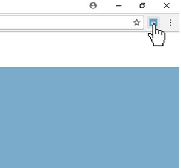
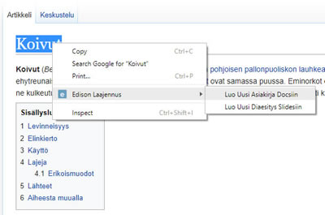

Helppo ja Yksinkertainen
Laajennus vähentää osoiteriviin edisonin verkko-osoitteen kirjoittamista. Edison Työpöytä aukeaa napin painalluksella nopeasti ja vaivatta!
Laajennuksessa on myös nopea tapa luoda uusi asiakirja, diaesitys, tms. vain painamalla oikeaa hiiren klikkausta. (Lähi)Tulevaisuudessa lisätään myös Edison Työpöydän Taustavärin vaihtaja, jonka ansiosta voit tehdä Edison Työpöydän Omanlaiseksi!  
Ominaisuudet
Nopea Edison Työpöytään siirtymistä varten pikakuvake
Helppo ja kätevä uuden dokumentin luoja napin painallukseklla
Tehdä Edison Työpöydästä omanlainen muokkaamalla taustaväriä(Ominausuus tulee myöhemmin Laajennukseen)